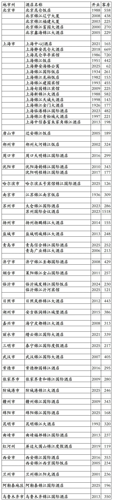
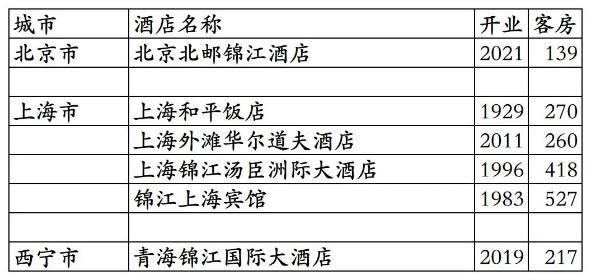
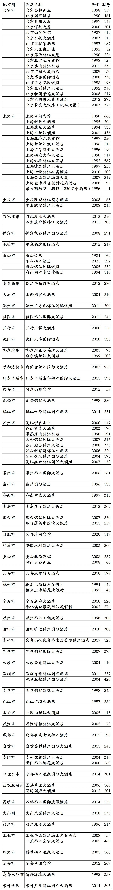
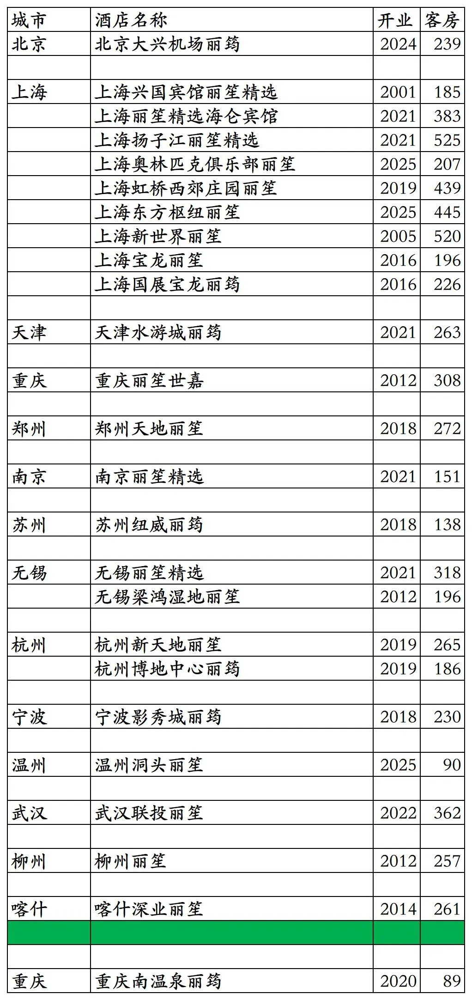
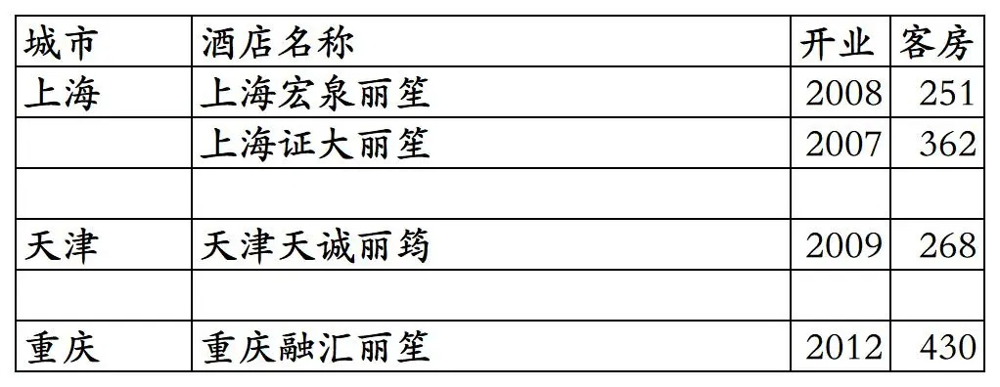
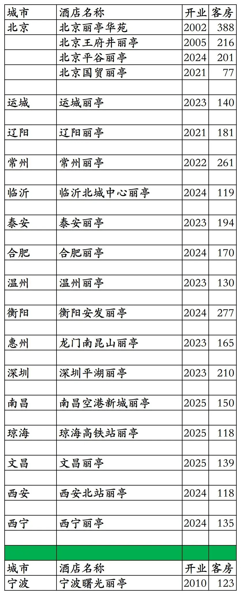
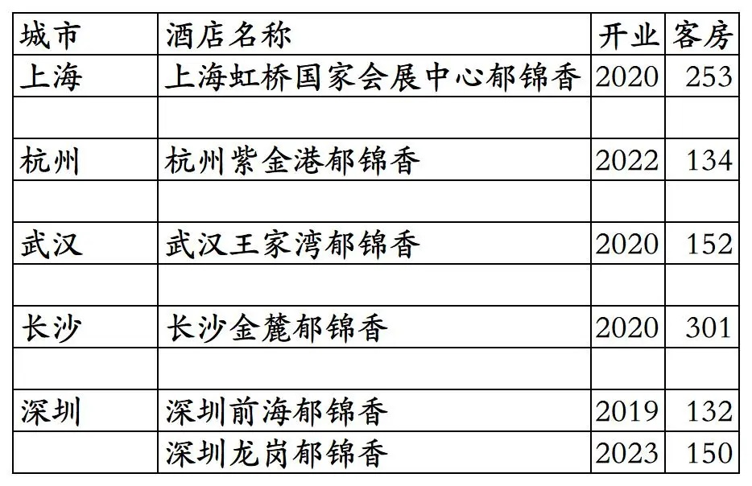

截至2025年12月31日，锦江荟平台可以查询到的国内开业在营锦江丽笙酒店共计109家。
不包括锦江为业主及持股的委托给国际品牌管理的上海和平饭店、上海锦江汤臣洲际、上海华尔道夫等酒店，不包括锦江特许经营的非锦江旗下品牌上海东锦江希尔顿逸林酒店。
锦江丽笙酒店包括J酒店、岩花园、昆仑、锦江（三星级到五星级档次都有）4个品牌和中国区域丽笙精选、丽笙、丽筠、丽祺、丽亭、郁锦香这6个品牌。
目前J酒店只有1家；岩花园酒店无，2013年时开过一家北京榈园岩花园酒店（海岩的产业）但早已停业多年，上海岩花园酒店目前在建中，宣称2024年开业但并未开业，又宣称2025年开业但仍未开业；昆仑目前有3家酒店；锦江品牌目前还有54家（10多年前60多家）。
开业：新酒店开业或是酒店翻牌开业时间；客房：客房数量。
锦江荟平台55家原锦江旗下品牌高星酒店。其中上海华亭宾馆2026年升级改造后重新开业改成昆仑品牌，客房也减少至540间。

3家不在锦江荟平台的锦江酒店及3家锦江为业主委托国际品牌管理的酒店。北京北邮锦江酒店2024年从锦江荟下线，上海宾馆停业翻新中，青海锦江国际大酒店开业后一直未上线锦江官方平台。

历年来退出/关停的锦江品牌酒店。感谢zwj提供的部分锦江退出/关停酒店名单。

丽笙旗下国内3个高端品牌酒店25家。其中重庆南温泉丽筠开业至今从未上线锦江官方预订平台。

丽笙国内4家已退出的高端品牌酒店。上海宏泉丽笙已翻牌为Pagoda君亭设计酒店，上海证大丽笙先翻牌为华住管理的上海证大美爵，2025年1月1日退出翻牌，不久又翻牌为雅高管理的上海证大美爵。

丽笙旗下国内中档品牌丽亭酒店19家。1家早已退出的宁波曙光丽亭，但还是一直挂牌丽亭。

卢浮旗下国内中档品牌郁锦香酒店11家。其中徐州淮海郁锦香已关闭锦江荟预订通道。上海虹桥宾馆郁锦香为原上海锦江虹桥宾馆翻牌，上海外滩郁锦香新亚大酒店为原上海新亚大酒店，后翻牌为锦江都城经典，最终又翻牌为上海外滩郁锦香。
郁锦香国内6家已退出的酒店。武汉王家湾郁锦香之前为首旅建国管理运营的武汉铁桥建国大酒店，深圳前海郁锦香已翻牌为亚朵S酒店。
